1004E10 ENGINE, REMOVED - REMOVE CYLINDER HEAD AND OIL SUMP FOR INSPECTION - INCLUDES POSITIONING ON STAND AND REMOVAL
- Path
- Procedures > 10 ENGINE UNIT > 1004 ENGINE AND POWER UNIT > 1004E ENGINE ASSEMBLY INSPECTION AND REPAIRS > 1004E10 ENGINE, REMOVED - REMOVE CYLINDER HEAD AND OIL SUMP FOR INSPECTION - INCLUDES POSITIONING ON STAND AND REMOVAL
- Kind
- repair procedure (removal / refitting; the operation number is the code)
- Applies to
- engines: 2.3 JTD 16V, 2.8 JTD 8V; all production periods
- Interactive page
- https://sloeber94.github.io/elrnDB-fDct/en/#/244000625
Applies to: engines: 2.3 JTD 16V; all production periods
See in Op. 1004D40
1.
- Disconnect the electrical connections for the injection wiring.
 | Description | Connector |
|---|---|---|
. | Injector | N070A |
| Description | Connector |
|---|---|---|
. | Injector | N070B |
| Description | Connector |
|---|---|---|
. | Injector | N070C |
| Description | Connector |
|---|---|---|
. | Injector | N070D |
| Description | Connector |
|---|---|---|
. | Timing sensor | K047 |
| Description | Connector |
|---|---|---|
. | Fuel pressure sensor | K083 |
| Description | Connector |
|---|---|---|
. | Coolant temperature sending unit (for instrument panel) | K035 |
| Description | Connector |
|---|---|---|
. | Engine coolant temperature sensor/sender unit | K036 |
| Description | Connector |
|---|---|---|
. | Rpm sensor | K046 |
| Description | Connector |
|---|---|---|
. | Fuel pressure regulator | N077 |
- Disconnect the glow plug connections.
| Description | Connector |
|---|---|---|
. | Heater plugs | A040A |
| Description | Connector |
|---|---|---|
. | Heater plugs | A040B |
| Description | Connector |
|---|---|---|
. | Heater plugs | A040C |
| Description | Connector |
|---|---|---|
. | Heater plugs | A040D |
- Remove the injection wiring and the glow plug wiring.
1. Press connectors (1a), undo clips (1b) and disconnect the fuel recirculation pipe from the injectors.
2. Prise off the fuel recirculation pipe.
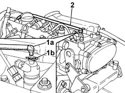
Applies to: engines: 2.3 JTD 16V; all production periods
1. Unscrew the glow plugs and remove.
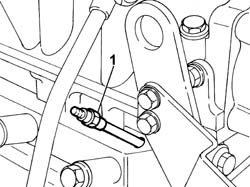
Applies to: engines: 2.3 JTD 16V; all production periods
1. Unscrew the connectors and remove the pipes from the fuel manifold to the injectors.
2. Unscrew the connectors and remove the pipe from fuel manifold to pressure pump.
3. Undo connector (3a) and disconnect the fuel return pipe.
4. Undo bolts (4a) and remove fuel manifold (4b).
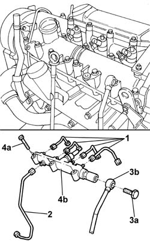
Applies to: engines: 2.3 JTD 16V; all production periods
1. Undo bolts (1a) and remove fuel vapour separator cover (1b).
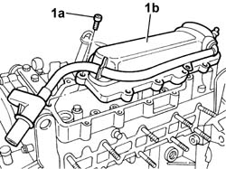
Applies to: engines: 2.3 JTD 16V; all production periods
1. Undo nuts (1a) and remove bracket (1b) supporting the cold air intake pipe to the turbocharger.
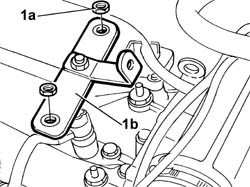
Applies to: engines: 2.3 JTD 16V; all production periods
1. Undo bolts (1a) and remove brackets (1b) for the injectors.
2. Use appropriate tools (2a) and (2b) to remove injectors (2c) with seal.
 | Description | Code | Function |
|---|---|---|---|
2a | Extractor | 1.870.850.000 | Injector removal |
| Description | Code | Function |
|---|---|---|---|
2b | Mallet | 1.840.206.001 | Injector removal |
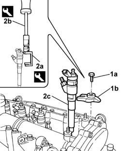
Applies to: engines: 2.3 JTD 16V; all production periods
1. Fit the flywheel locking tool.
| Description | Code | Function |
|---|---|---|---|
1 | Counter-torque | 1.860.846.000 | Flywheel lock |
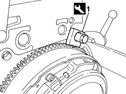
Applies to: engines: 2.3 JTD 16V; all production periods
1. Undo the bolts (1a) and remove the crankshaft pulley (1b).
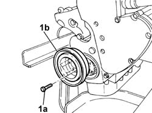
Applies to: engines: 2.3 JTD 16V; all production periods
1. Undo the bolts (1a) and remove the timing cover (1b).
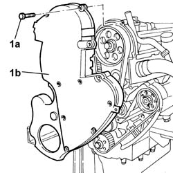
Applies to: engines: 2.3 JTD 16V; all production periods
1. Loosen the tensioner screw.
2. Remove the timing belt.
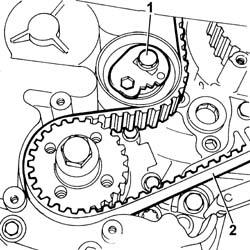
Applies to: engines: 2.3 JTD 16V; all production periods
1. Undo the retaining bolts.
2. Remove the head extension.
3. Remove the seal.
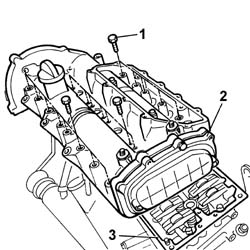
Applies to: engines: 2.3 JTD 16V; all production periods
1. Undo retaining bolt (1a) and remove the engine oil dipstick tube (1b).
2. Remove the bands and disconnect the connector from thermostat (2a) and the connector from engine oil heat exchanger (2b).
3. Undo bolts (3a) and remove pipe (3b) from thermostat to radiator and pipe (3cv) from engine oil heat exchanger to radiator.
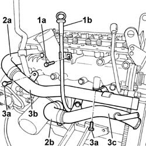
Applies to: engines: 2.3 JTD 16V; all production periods
1. Undo bolts (1a) and place fuel manifold (4b) to one side.
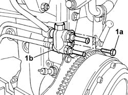
Applies to: engines: 2.3 JTD 16V; all production periods
1. Undo bolts (1a) and remove engine coolant filler pipe (1b) complete with sealing ring (1c).
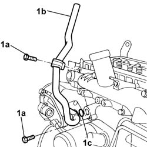
Applies to: engines: 2.3 JTD 16V; all production periods
1. Remove rockers (1a) complete with return springs (1b) and tappets (1c).
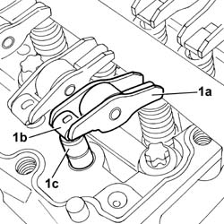
Applies to: engines: 2.3 JTD 16V; all production periods
1. Undo bolts (1a) and remove cylinder head (1b) complete with heat exchanger for EGR (1c), intake manifold (1d) and thermostat (1e).
- Remove the cylinder head gasket.
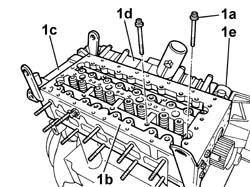
Applies to: engines: 2.3 JTD 16V; all production periods
- Turn the engine on the overhaul stand.
1. Undo bolts (1a) and remove the engine block sump.
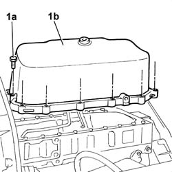
Applies to: engines: 2.8 JTD 8V; all production periods
See in Op. 1004D40
1. Release the fastening springs and remove the injector cover.
2. Disconnect the electrical connections for the timing sensor (2a), pressure pump piston III exclusion (2b), coolant temperature (2c), airintake temperature (2d), injectors (2e), engine rpm sensor (2f).
3. Remove the bracket together with the wiring.
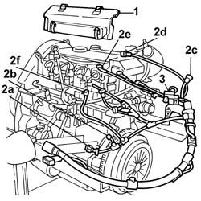
Applies to: engines: 2.8 JTD 8V; all production periods
1. Disconnect the thermal starter fuel pipe connector from the fuel manifold.
2. Undo the fixing nuts (2a) and disconnect the intake manifold (2b).
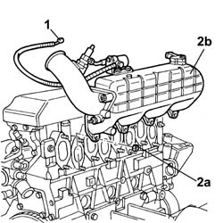
Applies to: engines: 2.8 JTD 8V; all production periods
- Fit the tool.
| Description | Code | Function |
|---|---|---|---|
. | Counter-torque | 1.860.741.000 | Tool for preventing crankshaft rotation |
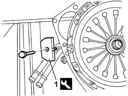
Applies to: engines: 2.8 JTD 8V; all production periods
1. Undo the centre fixing bolt.
2. Remove the engine components drive pulley.
- Remove the tool.
| Description | Code | Function |
|---|---|---|---|
. | Counter-torque | 1.860.741.000 | Tool for preventing crankshaft rotation |
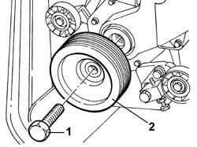
Applies to: engines: 2.8 JTD 8V; all production periods
1. Remove the lubricant filler cap.
2. Undo the bolts (2a) and remove the upper timing drive belt cover (2b).
3. Undo the bolts (3a) and remove the intermediate timing drive belt cover (2b).
4. Undo the bolts (4a) and remove the lower timing drive belt cover (4b).
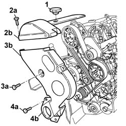
Applies to: engines: 2.8 JTD 8V; all production periods
1. Loosen the belt tensioner fixing bolt.
2. Remove the timing belt.
3. Undo the fixing bolts (3a) and remove the fixed pulley (3b) and the guard (3c) underneath.
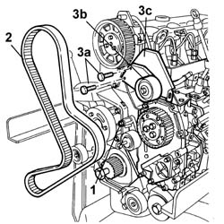
Applies to: engines: 2.8 JTD 8V; all production periods
1. Undo the fixing bolt (1a) and remove the engine oil dipstick assembly (1b).
2. Disconnect the pressure pump side connector for the supply pipe from the pressure pump to the manifold using a suitable spanner.
3. Disconnect the manifold side connector for the supply pipe from the pressure pump to the manifold using a suitable spanner.
4. Remove the pipe from the fuel supply connector to the pressure pump.
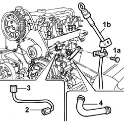
Applies to: engines: 2.8 JTD 8V; all production periods
1. Remove the fuel return pipe from the injectors.
2. Undo the manifold side connectors for the pipes from the fuel manifold to the injectors using a suitable spanner.
3. Undo the injector side connectors for the pipes from the fuel manifold to the injectors using a suitable spanner.
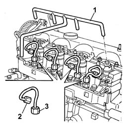
Applies to: engines: 2.8 JTD 8V; all production periods
1. Undo the bolts (1a) and remove the brackets (1b) for the injectors.
2. Remove the injectors (2a) complete with gasket (2b).
3. Remove the injector bracket support pads.
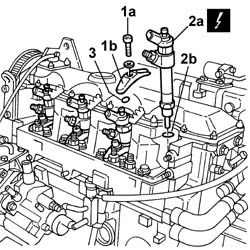
Applies to: engines: 2.8 JTD 8V; all production periods
1. Undo the fixing bolts (1a) and remove the cylinder head cover (1b) complete with gasket.
2. Undo the short bolts (2a) fixing the cylinder head, then undo the long cylinder head fixing bolts (2b).
3. Remove the cylinder head assembly.
4. Remove the cylinder head gasket.
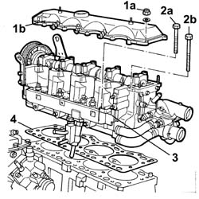
Applies to: engines: 2.8 JTD 8V; all production periods
- Rotate the engine through 180° on the overhaul stand.
1. Undo the bolts fixing the crankcase sump.
2. Cut the sealant using the tool.
| Description | Code | Function |
|---|---|---|---|
2 | Blade | 1.870.718.000 | Engine oil sump removal |
3. Remove the crankcase sump.
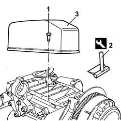